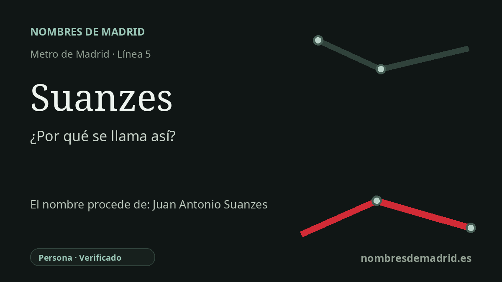

Publicado el · Investigación de Nombres de Madrid · Cómo verificamos cada origen · 9 fuentes consultadas
Respuesta rápida
Suanzes toma su nombre de Juan Antonio Suanzes Fernández (1891-1977), ingeniero naval, ministro durante el franquismo y primer presidente del Instituto Nacional de Industria. La estación abrió con este nombre el 18 de enero de 1980, junto al entorno de la Quinta de los Molinos.
La historia del nombre
El nombre de la estación **Suanzes** remite a Juan Antonio Suanzes Fernández (1891-1977), ingeniero naval, militar y político estrechamente vinculado a la política industrial de la España de Francisco Franco. En la explicación pública del entorno, el nombre aparece asociado con el título de **marqués de Suanzes**, que le fue concedido en 1960.
Suanzes nació en Ferrol, ciudad gallega de fuerte tradición naval, y se formó en el ámbito de la Armada. Su trayectoria pasó de la ingeniería naval a la industria y la política: dirigió intereses de construcción naval, se incorporó al bando de Franco durante la Guerra Civil y fue ministro de Industria y Comercio en el primer gobierno franquista de 1938. Volvió a ocupar esa cartera entre 1945 y 1951.
Su papel institucional más duradero estuvo en el **Instituto Nacional de Industria**. Creado en 1941, el INI fue el gran holding industrial público de la España franquista, y Suanzes fue su primer presidente hasta 1963. Esa posición hizo que su apellido quedara especialmente presente en lugares relacionados con el desarrollo industrial de mediados del siglo XX, incluidos sectores del este de Madrid donde las fábricas y centros de trabajo vinculados al INI dejaron memoria local.
La estación de Metro abrió al público el **18 de enero de 1980**, cuando la línea 5 se prolongó desde Ciudad Lineal hasta Canillejas. Está situada bajo la calle de Alcalá, junto al entorno de la Quinta de los Molinos, en el distrito de San Blas-Canillejas; propuestas posteriores defendieron cambiar el nombre a **Quinta de los Molinos** para dar mayor visibilidad a ese parque histórico.
El origen del nombre está bien documentado, pero no es neutral. En 2016 y 2017 la estación entró en el debate sobre memoria pública después de que un panel biográfico sobre Suanzes fuera criticado por minimizar su papel en el franquismo, y la Junta de Distrito pidió a los organismos competentes estudiar cambios en los espacios dedicados a él. El marquesado fue concedido en 1960, en vida de Suanzes, y quedó suprimido por la Ley de Memoria Democrática de 2022.